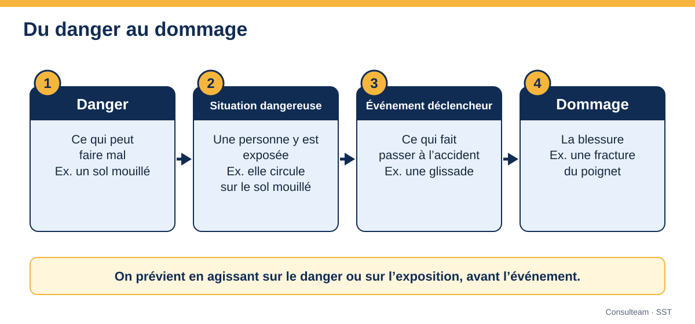
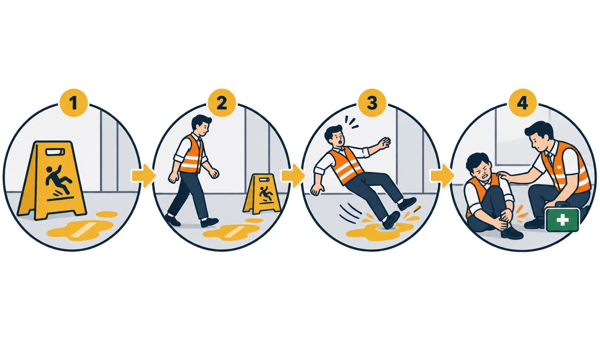

Module 6 · C6
Situer son rôle dans l'organisation de la prévention
🎯 À la fin de ce module vous saurez :
- 6.1 S'approprier les enjeux de la prévention
- 6.2 Se positionner comme un des acteurs de la prévention
Épreuve certificative 2 Jour 1 matin
Le réflexeJe suis un acteur de la prévention : avant, pendant et après l’accident.
👀 En un coup d’œil

Comment lire : Chaque maillon est une occasion d’agir. Plus on agit tôt dans la chaîne, plus on évite le dommage.

📌 À retenir
- Prévention : ensemble des dispositions pour préserver la santé et la sécurité et améliorer les conditions de travail. Un risque se décrit par la probabilité d’un dommage et sa gravité.
- Accident du travail (L411-1), accident de trajet (L411-2), maladie professionnelle (L461-1) : enjeux humains, économiques et juridiques.
- Le SST est un acteur de la prévention : avant, pendant et après l’accident. Il s’articule avec les acteurs internes (CSE, service de prévention et de santé au travail, infirmier…) et externes (Carsat, IPRP…), dans les limites de ses compétences et de son autonomie.
Pour aller plus loin
Carsat PAP Plan d’actions prévention (PAP)
✅ Se valider
Quelques questions pour vérifier ce module. Aucune donnée n’est enregistrée.
Sources : Manuel formateur 2024, compétence 6 ; INRS, fiche outil prévention n° 2 (service Prévention) et n° 3 (PAP) ; ameli risques professionnels (statistiques)